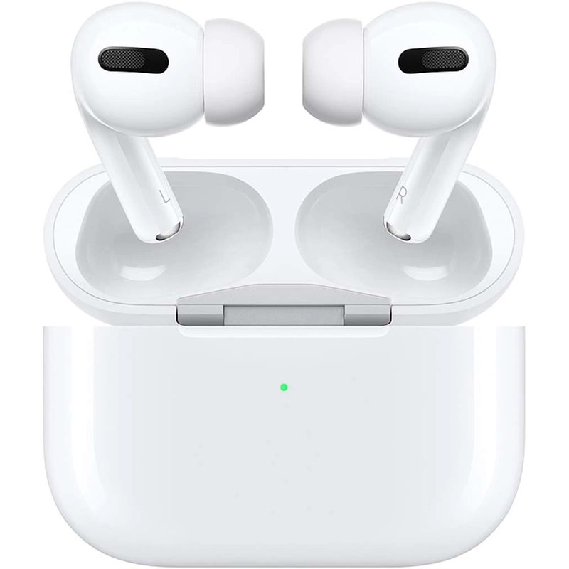

AirPods


AirPods — беспроводные Bluetooth наушники от корпорации Apple.
Представляют собой два раздельных наушника (TWS), использующих жесты для взаимодействия с пользователем: вынимание наушника из уха приостанавливает воспроизведения (функция «пауза»);
возврат его на место — продолжит воспроизведение; двойное касание запускает голосового ассистента Siri, либо управляет воспроизведением музыки. Наушники AirPods совместимы с устройствами Apple на iOS 10 или новее,
а также с ПК и ноутбуками на базе macOS Sierra и часами на базе watchOS.
Наушники воспроизводят звук с любого устройства, совместимого со стандартом Bluetooth 4.0. На устройствах с ОС Android доступен жест «двойное касание» для управления.
Продукция Apple
iPhone
iPad
Apple Watch
Mac